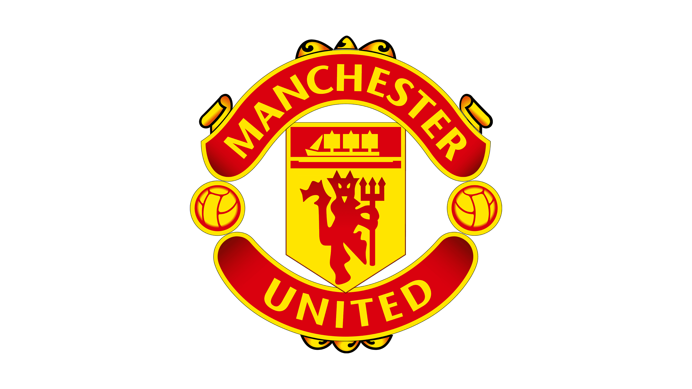

Manchester United
El Manchester United, fundado en 1878 como Newton Heath LYR, es uno de los clubes más exitosos y populares del fútbol inglés. Renombrado en 1902, ha ganado múltiples títulos de liga, copas nacionales e internacionales. Bajo entrenadores icónicos como Sir Matt Busby y Sir Alex Ferguson, el equipo vivió épocas doradas, con éxitos como la Liga de Campeones de 1999. Es conocido por su afición mundial y su legado en la Premier League.